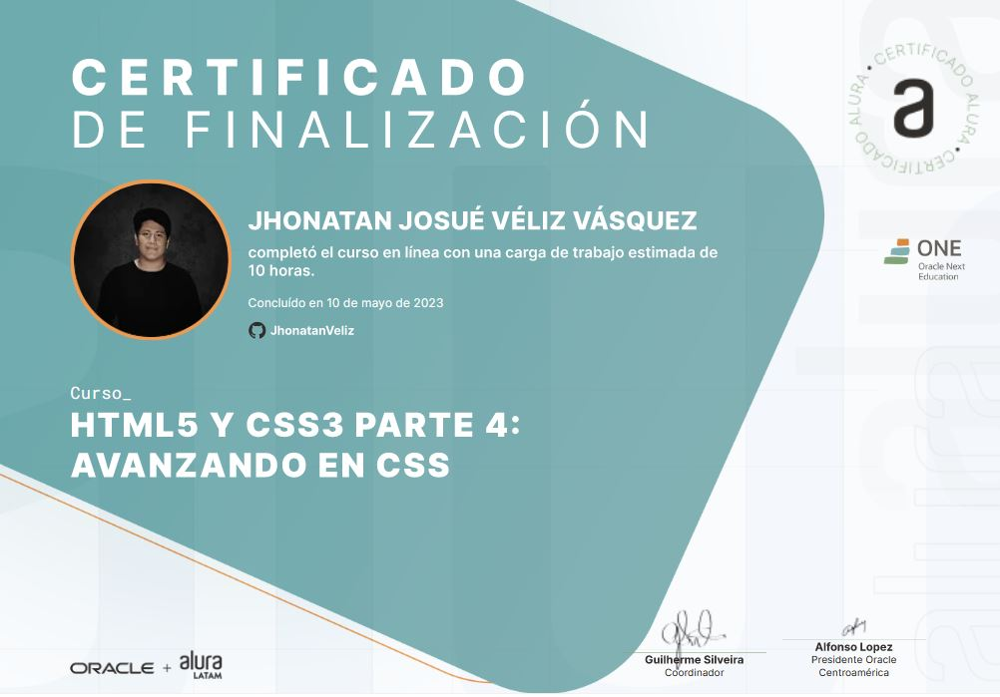
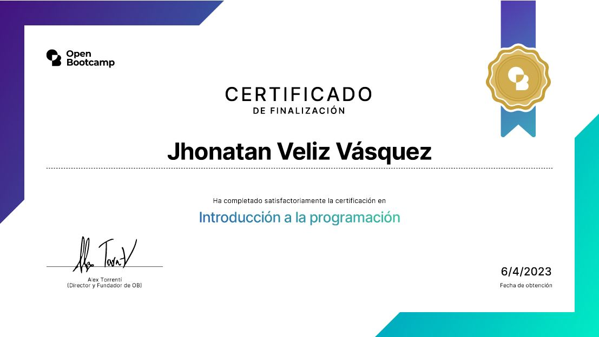

¡ Hola ! Bienvenido a la sección de mi historia
Gracias por estar aquí, en esta sección te contare un poco más acerca de mi.
Mi nombre es Jhonatan Josué Véliz Vásquez, soy de Guatemala, y a la edad de 17 años tuve mi primer contacto con la programación, claro en ese entonces eran solamente ejercicios de clase de 4to bachillerato en computación, pero a partir de esos algoritmos de clase comence a sentirme atraido hacia lo que es el código y decidí de forma autodidacta comenzar a aprender varias tecnologías, en ese entonces estaba abrumado de la gran cantidad de opciones que habia en dirección a la programación, pero me llamo mucho la atención el diseño web y el desarrollo de aplicaciones, di comienzo por la ruta del frontend developer, apredí muchisimo y me gusto verdaderamente esa área.
Al pasar el tiempo senti curiosidad por saber que había más ayá del diseño y
decidí explorar el lado del backend, la verdad me senti un poco confundido ya que no tenia muy en
claro como funcionaba el lado del servidor pero con el pasar del tiempo fui aprendiendo varias cosas
y me comenzo a dar gusto y placer crear programas desde la parte de la interfaz hasta crear la
lógica detras de un programa.
Actualmente no me canzo de aprender y me describo como un
Fullstack Developer y una de mis metas es poderme introducir al mundo de la
ciberseguridad.
Aquí encuentras todas mis certificaciones